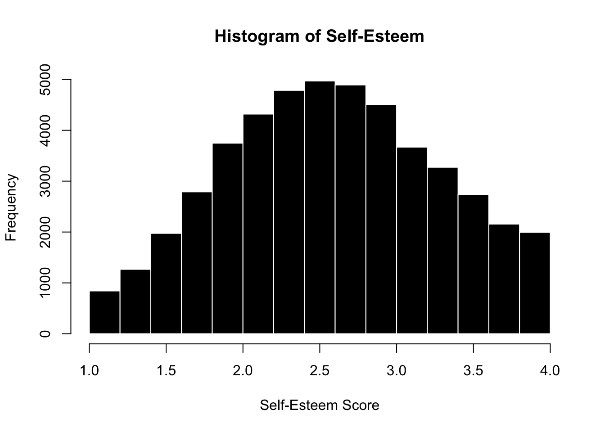
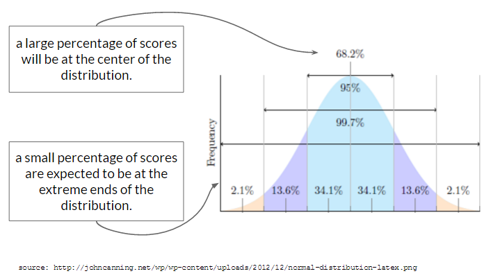
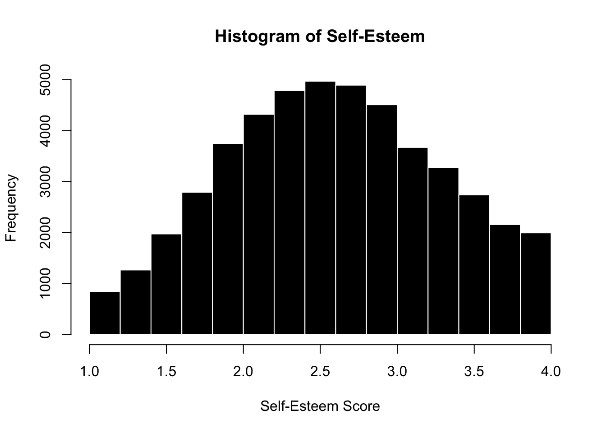
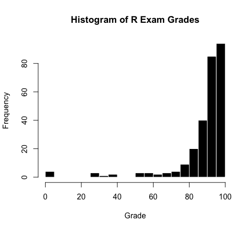
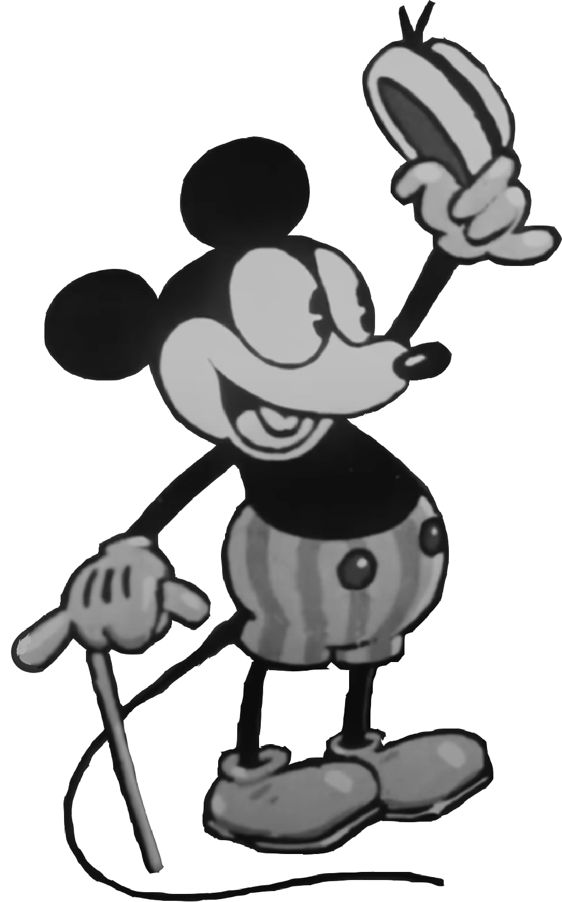
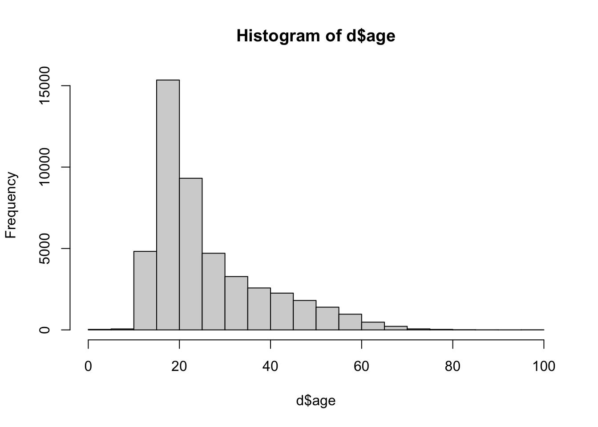
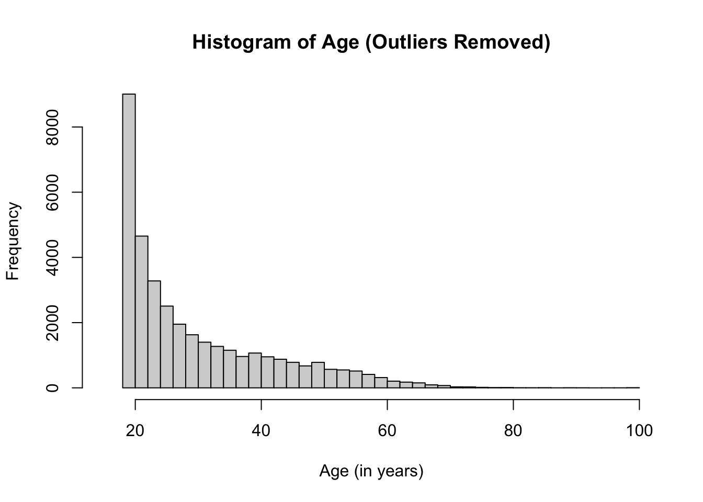
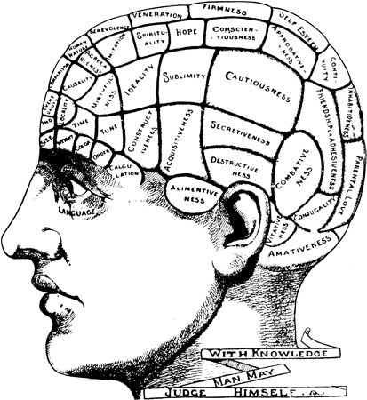
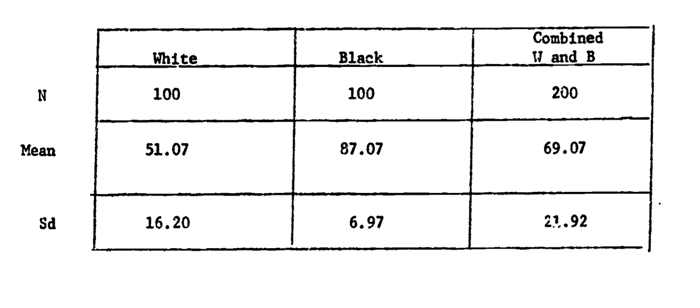

hist(d$SELFES, col = 'black', bor = 'white',
main = "Histogram of Self-Esteem",
xlab = "Self-Esteem Score", breaks = 15)
In this chapter, we’ll define and discuss the idea of “normality”, how psychologists (and scientists) evaluate whether data are “good”.
The image above depicts Grounded in the Stars, a 12-foot sculpture of a young woman that stood in New York CIty’s Times Square from April 29 through June 14, 2025.
There’s a lot that I love about this image, from the artistry of rendering braids and clothes so naturally in sculpted bronze, to the way the character stares off in the distance as if unconcerned with the gaze of others, to the way the sculpture proudly claims space in a society that does not currently and historically create inclusive spaces for black women. Indeed, the sculpture is surrounded by other massive images1 whose presence in the space may go unnoticed because it is so routine to see images of white men in public places.
1 Tom Cruise and some eyeglass model who kind of looks like a 90s era Tom Cruise. Ving Rhames is there too if you look closely enough.
The artist’s website emphasizes the way the sculpture challenges pre-existing ideas about who is represented in our society, and references Michelangelo’s David as inspiration, but clarifies that this sculpture is “A fictionalized character constructed from images, observations, and open calls spanning between Los Angeles and London” who “carries familiar qualities, from her stance and countenance to her everyday clothing.”
This statue, and the fact that it was an amalgamation of real people, also reminded me of the sculptures of “Normmann” and Norma.
2 For a more in-depth history of Norma and Normann, including critiques of the gender and post-WW2 contexts in which these statues arose, See Chapter 8 of Peter Cryle & and Elizabeth Stephens’ Normality: A Critical Genealogy. University of Chicago Press, 2017.Chicago Scholarship Online, 2018. https://doi.org/10.7208/chicago/9780226484198.001.0001.
Like the unnamed woman in Times Square who was the subject of Grounded in the Stars, Normmann and Norma’s measurements were based on composites of other people; in Norma’s case “the averaged measurements of ‘native white’ American women recorded and standardized by the Bureau of Home Economics in 1940, in an attempt to devise the first standardized system of sizing for ready-made clothes.”2
Unlike the subject of Grounded in the Stars, Norma and Normmann were based on different demographic data. More important, these characters were labeled and advertised as “The Typical American”. A type of person who reflected and reinforced the values that white America wanted to promote.
Indeed, these statues achieved their purpose in various ways; Norma and Normman were first displayed in the American Museum of Natural History during the International Congresses of Eugenics in 1945. Furthermore, when the statues were gifted to the Cleveland Health Museum, the museum held a contest to find the woman who most typically represented Norma3, offering prize money in “a search for Norma, the typical American woman”. While a winner was selected, the search failed in the original efforts to find someone who perfectly matched this average, as the measurements of the winner “did not coincide with those of the statue. . . . after assessment of the measurements of 3,863 women who entered the search, Norma remained a hypothetical individual.”4
3 I’m not entirely sure why Normann was not subject to a similar contest, though my guess is that it’s a symptom of a patriarchy that perpetuates the male gaze in many ways.
4 Josephine Robertson, “Theatre Cashier, 23, Wins Title of ‘Norma,’ Besting 3,863 Entries,” Cleveland Plain Dealer, September 23, 1945, 1.
Here, we see a few course themes that we will discuss in this chapter, and in this week’s lecture :
What is “normal” and who gets to define this term?
What are the alternatives to “normality”? How are these alternatives labeled?
What is the point of labeling individuals as normal?
Before we get into the critique in our class, let’s use this space to go over some of the basic definitions.
The “Normal” (or Gaussian) distribution is a common shape for what distributions of data look like. The shape is often called a “bell curve”, because it looks like the curve of a bell. Ding.
While many distributions appear normal, the “Normal Distribution” ™ refers to a distribution that describes an expected probability of a range of scores.

The Normal Distribution is called “normal”, in part, because researchers expect to see this type of distribution for variables where two conditions are met:
Indeed, many of the variables that psychologists measure do appear “Normal”. For example, let’s look at one example “normal” distributions - the “self-esteem” variable we saw in Lecture 2. Note that it’s not perfectly normal5, but it’s pretty close and representative of the kind of “real world” data that you might encounter.
5 good not to hold data to unrealistic body images as well as people.
hist(d$SELFES, col = 'black', bor = 'white',
main = "Histogram of Self-Esteem",
xlab = "Self-Esteem Score", breaks = 15)
“Independent” explanations for why variation in self-esteem occurs. Self-esteem is complex, and can be influenced by variables such as: genetics, parental environment, home environment, income, neurotransmitters, whether your crush told you they like you too the day you took the self-esteem survey, etc. These variables are considered independent because one does not influence the other, and they differ across participants in the study. That is, someone who had a happy parental environment may not necessarily have a high income, rich people have their crushes ignore them too, etc.
“Non-Random” Explanations. Careful observers will note that self-esteem appears slightly shifted above the mid-point of the scale (which goes from 1-4, so 2.5 would be the mid-point), and that there’s some slight negative skew (meaning more individuals are on the higher end of the distribution). It’s unclear why there’s this shift in the data, but below are a few possible reasons :
There’s some shared cultural experiences among participants - our society values self-esteem, and people might be biased to self-enhance / self-present a higher self-esteem. This is a non-independent influence, since many participants might experience this in our culture that puts pressure on people to have a high self-esteem.
The sample was biased to include people with higher levels of self-esteem, or maybe people with lower levels of self-esteem were less likely to complete the survey (which hurts their self-esteem because they haven’t yet fully internalized that it’s okay to be imperfect in a society that demands perfection.) In any case
The survey was administered on a day when everyone in the world had a really good hair day, so there’s a non-independent factor that’s shifting many people’s self-esteem up.
Below is another example of a distribution - this one is not random, but is skewed (pop quiz : is it positively or negatively skewed? See here for answer6.)
6 It is negatively skewed, since the tail is on the negative side of the distribution.

Lots of things can influence a student’s score on an exam, such as how much students were motivated to study, how much time they had to study, what was going on in their lives, whether they had a study buddy in the class, whether they were sick or not on the day of the exam, their “test taking” skills and strategies and anxiety levels, etc.
These data are not normally distributed because the students were all part of the same college, in the same classroom, taught by the same professor, at the same time. The professor did his best to prepare these students, and wrote a test that would be based on the kinds of practice they had gone over in lecture. These variables are considered “non random” because they were shared by all students. The data are skewed because these non-random shared experiences helped students do well on the exam.

That’s right folks, it’s time for another chat with your friend Open-Source Mickey Mouse! This time, we’re gonna chat about the idea that people differ from some average. The idea that you could quantify people as “average” is fairly new - it’s hard to pinpoint exactly, but a scientist named Quetelet first extended the statistical methods derived from astronomy to be applied to humans in the 1860s7. Quetelet thought the average was an ideal state since it reflected the center of all possible individuals. However, a few years later Francis Galton used Quetelet’s ideas to try and “rank” individuals according to some hierarchy of excellence. For Galton, the average was not an ideal state, but rather something to overcome in a desire for greater and greater excellence. Galton was also a racist and father of the eugenics movement, who used distorted statistics as a tool to justify his own pre-existing racist beliefs that white people were superior to everyone else. Yuck!
I think it’s worth the time and space to hear this from Galton himself.
To conclude, the range of mental power between—I will not say the highest Caucasian and the lowest savage—but between the greatest and least of English intellects, is enormous. … I propose in this chapter to range men according to their natural abilities, putting them into classes separated by equal degrees of merit, and to show the relative number of individuals included in the several classes…..The method I shall employ for discovering all this, is an application of the very curious theoretical law of “deviation from an average.” First, I will explain the law, and then I will show that the production of natural intellectual gifts comes justly within its scope. - Galton, Hereditary Genius (1869). Linked here.
The point of bringing up some of the racist origins of statistics is two-fold :
Alright, that’s all for now! Let me know what you think and see you next time!
7 see Rose’s END OF AVERAGE (2016) or, for a more critical approach, Chapman’s (2023) EMPIRE OF NORMALITY.
The normal distribution is foundational to the statistics we will learn in this class. (And in an advanced statistics class, you’ll learn how to adapt techniques if you want to understand non-normal distributions.)
This does not mean that every variable needs to be normally distributed; we’ll work with skewed variables and categorical variables (which have their own distributions) in lots of ways. However, the “normal distribution” is an important reference point that we can use to evaluate variables. For example, exam scores are negatively skewed because they differ from the normal distribution.
The z-score is a linear transformation8 that calculates the distance of an individual score (\({y_i}\)) from the mean (\(\hat{y}\)) in units of standard deviation \({\sigma_y}\).
8 A linear transformation means that the order and spacing of the data are unchanged - the person who has the highest self-esteem when measured on a 0 to 4 scale will still have the highest z-score, and be the same distance away from the next highest individual.
\[ \huge z = \frac{y_i - \hat{y}}{\sigma_y} \]
Each individual score in the dataset can be z-scored, and this statistic tells you how far above or below the individual is from others (the mean), relative to the average difference from the means (which is what the standard deviation describes.)
Z-scoring changes the units of the variable from the original unit of measurement, to units of standard deviation.
A z-score of 1 means that the individual is 1 standard deviation above the mean (about as different as average).
A z-score of 0 means that the individual is EXACTLY the mean.
A z-score of -4.112 means that the individual is over 4 standard deviations below the mean; which is VERY below average.
A z-score of .01 means the person is just a tiiiiny bit above the mean.
You can see first few “Raw” and “Z-Scores” from the self-esteem dataset below.
Raw.Scores Z.Scores
1 3.0 0.5300156
2 3.3 0.9593493
3 2.4 -0.3286517
4 2.7 0.1006820
5 4.0 1.9611279
6 3.6 1.3886830There are two ways of calculating the z-scores:
Using the scale() function. This function calculates the mean and standard deviation of an object, and then uses these statistics to calculate the z-score for the data.
[1] 0.5300156 0.9593493 -0.3286517 0.1006820 1.9611279You can also manually calculate a z-score. But don’t do this by hand. I mean you could, but you could also do this with a pencil and that’s not needed anymore.
A z-score can be useful for two reasons :
If we look at the variable age from the same self-esteem dataset, we see some issues.
This looks wrong. R says this is a histogram, but it doesn’t look like the histograms we’ve seen before for a few reasons :
[1] 1975 1993 229 366 1354 90210
[7] 80230 120 590 442 234 258
[13] 333 980 1000 45678 333 156
[19] 134 152 474 414 334 630
[25] 169 1997 2147483647 123 7300 118
[31] 972 9000 100000 662 117In this code, I’m using indexing [] to ask R to find two things :
d$age > 120 asks R to find the rows from the dataset d that contain ages that are greater than 100 years old.
!is.na(d$age) asks R to find the rows where age is NOT and NA values (the ! when used in coding means “not”). You don’t strictly need this code, but it made the output easier to read by removing all the NA values that I don’t care about right now.
the & sign in between these commands asks R to find individuals where both conditions are met. You can also use the | bar9 to ask R to find individuals where EITHER condition is met.
9 the bar can be typed by hitting shift + the key above your return or enter key on the keyboard.
I see that some of the ages were entered in as the year of birth; others look like maybe errors in data entry or jokes (e.g., 90210) and someone entered in an extreme value of 2147483647 that is contributing to our strange graph, and throwing off the mean (but not the median, since it, as we all remember from Chapter 3, is less sensitive to outliers.)
So let’s remove these outliers, and check to see that R did this correctly.
[1] 1975 1993 229 366 1354 90210
[7] 80230 120 590 442 234 258
[13] 333 980 1000 45678 333 156
[19] 134 152 474 414 334 630
[25] 169 1997 2147483647 123 7300 118
[31] 972 9000 100000 662 117
This looks better, but now I see that there are some suspiciously young ages.
So I’ll adapt my code to look for individuals who are less than 18 years old.
[1] 1youngfolk <- d$age[d$age < 18 & !is.na(d$age)]
youngfolk[1:100] # just the first 100 folks less than 18 [1] 15 16 14 15 16 14 16 13 17 12 14 14 14 17 16 16 16 13 17 16 17 16 16 17 17
[26] 15 17 16 13 14 15 1 17 17 17 17 16 12 17 17 6 12 15 17 17 14 16 16 17 11
[51] 14 14 11 17 17 16 4 14 15 17 16 16 15 16 15 15 16 17 14 17 16 17 14 15 15
[76] 17 14 15 14 17 16 15 16 16 16 17 17 14 16 16 17 17 16 15 16 16 16 16 16 17I see a lot of teenagers, and some young kids, and even an individual who is reporting their age as 1. And while it could be interesting to look at the narcissism levels of teenagers (and Freud wrote a brilliant if slightly deranged chapter on baby narcissism in Civilization and Its Discontents), I’m going to avoid any CPHS violations (which treats minors as vulnerable populations) and invoking the wrath of the THE YOUTH who ARE OUR FUTURE, and go ahead and remove these people from the dataset too.
And now I have much clearer view of the variable age, and a more representative mean and standard deviation of age.
hist(d$age, xlim = c(15,100), breaks = 30, main = "Histogram of Age (Outliers Removed)", xlab = "Age (in years)")
[1] 30.07251[1] 12.25539Looking at the graph, I’m not sure that 100 was the best cut-off for age. There are only a few people between the ages of 80-100, and I’m wondering whether they should actually be included in the dataset.
[1] 85 99 92 100 95 83 85 85 89 92 81 99 87 100 82 81 85 98 90
[20] 90 99 86 84 84 82Here’s where a z-score could be useful. Are these elders radically different from our distribution? Let’s see how far they are away from the mean of age in units of standard deviation!10
10 In the code below, I’m calculating the z-score of age, and defining this as ageZ. But I’m using the original variable - age - to define my rules inside of the bracket.
[1] 4.481906 5.624261 5.053084 5.705858 5.297874 4.318713 4.481906 4.481906
[9] 4.808293 5.053084 4.155519 5.624261 4.645100 5.705858 4.237116 4.155519
[17] 4.481906 5.542664 4.889890 4.889890 5.624261 4.563503 4.400309 4.400309
[25] 4.237116I see that all of these ages are very more than four standard deviations away from the average - this is very different from average. In a “normal” distribution, the vast majority of other data would be expected to fall below these z-scores. I can look this up with the pnorm() function, which calculates the probability of a score falling below a given z-score (what’s called the “lower tail” of the distribution. You can also use this function to find the upper tail by changing one of the arguments.)
[1] 99.99963 100.00000 99.99998 100.00000 99.99999 99.99922 99.99963
[8] 99.99963 99.99992 99.99998 99.99838 100.00000 99.99983 100.00000
[15] 99.99887 99.99838 99.99963 100.00000 99.99995 99.99995 100.00000
[22] 99.99975 99.99946 99.99946 99.99887 [1] 0.9999963 1.0000000 0.9999998 1.0000000 0.9999999 0.9999922 0.9999963
[8] 0.9999963 0.9999992 0.9999998 0.9999838 1.0000000 0.9999983 1.0000000
[15] 0.9999887 0.9999838 0.9999963 1.0000000 0.9999995 0.9999995 1.0000000
[22] 0.9999975 0.9999946 0.9999946 0.9999887So, if 99.99963% of other scores are expected to fall below an age that is 4.48 standard deviations above the mean (which is the z-score for an 85 year old person in this dataset), then it seems like the 85 year old person is radically different from the rest, and could be excluded.
Some people like to define “rules” for excluding data; things like 3x the standard deviation, or 4x the standard deviation. I’m not a huge fan of these rules, since I think they ignore important context for variables, and are hard to always apply (for example, the teenagers in the dataset are within 3 standard deviations, but I still think they could and should be excluded.) It’s best to try and see what the standards in a particular field are, try to make decisions about outlier removal before you collect the data (something called pre-registration, which we will learn about later), document these changes (in your R code), and then be prepared to make different decisions when someone reviewing your research (like an advisor or journal editor) asks you to do something different.
In the video below, I introduce the dataset, do some data cleaning, and discuss the mean and median.
In the video below, I work through calculating the standard deviation, why the outliers are causing problems with the descriptive statistics, and then professor goes on a little tangent about a few different methods on how to address these problems. Note : we won’t really cover log-transformations in this chapter (yet! maybe I’ll add it at some point but there’s already a lot going on.) But let me know if you have questions and I can try to explain point y’all to some other resources.
Here’s a link to the RScript I use in the videos.
Here’s a video I recorded a few years ago on z-scores. Plan to re-record something, so let me know what you like about this video, and / or what other videos on this topic (or any topic in the class) you would like to see.
Scientists evaluate the quality of their measures in terms of validity (“truth” or accuracy) and reliability (repeatability or precision). Learn more about these two concepts - and their specific forms - in the two videos below.
Face Validity: asks us to evaluate whether our measure or result look like what it should look like. This is a superficial (and somewhat subjective) judgment. But it is often a powerful and quick way to assess. For example, if I measure my height and it tells me 100 feet, I know something is wrong because there is no way I’m that tall. Or, when looking at a self-esteem measure, I would want to see items that look like self-esteem questions (“I feel good about myself”.) If the self-esteem measure had other questions in it that didn’t really seem like they were measuring self-esteem (“I like to look at myself in the mirror”) I would have questions about the face-validity of the measure. This seems super obvious, but it’s an important check - do the measures used actually look like what they should?
Convergent validity: asks us to evaluate whether our measure similar to related concepts. When two things converge, they come together, and we want our measure to be similar to things that it should be similar to. For example, a measure of body height should be related to a measure of shoe size or tibia length. A measure of self-esteem should be similar to a measure of self-efficacy or satisfaction with life, since both are about how the person is subjectively seeing themselves. They shouldn’t be exactly the same thing, but we’d expect to see a pattern in the data. (We’ll talk more about how to quantify these patterns when we learn more about linear models.)
Discriminant validity: asks about whether our measure is different from unrelated concepts. When two things diverge, they are different from one another. And we WANT our measure to be different from things that we expect them to be different from. For example, a measure of height should be different from a measure of reading speed or how organized a person is. We would expect self-esteem to be different from how social a person is (though maybe there’s some relationship since our society values sociability, and people who are social might get more positive messages from others, bolstering their self-esteem.) This is the hardest concept for students to get, but it’s a really important test of the validity of a measure. I not only want my measure to be related to concepts it should be related to, but also different from concepts it should be different from.
Test-retest reliability: asks us to evaluate whether we get the same result if we take multiple measures separated by time. If I think of self-esteem as a stable trait, I should expect to see some similarity in a person’s self-esteem at one time point and then the next day. Of course, there will be some change - self-esteem (and other personality variables) can be influenced by the situation and environment. But they shouldn’t be radically different if we have a good measure of this core aspect of the self.
Inter-rater / Inter-judge reliability: asks us to evalute whether multiple observers (or tools) make similar measurements. If I have two rulers made by the same company, I would expect them to give me similar answers for how tall I am. Similarly, two different observers who are reliable should make similar jugments about a person’s self-esteem, or the number of interruptions they count. If our measure is not reliable, then we might get different answers from the different people (or tools) making the measurement.
Inter-item reliability: When we learned about likert scales, we learned about Cronbach’s Alpha - a method of assessing how much the different items in a likert scale were related to each other. This is a form of reliability - specific only to likert scales where we have different questions that are all measuring the same thing. If the scale is reliable, we expect to get similar answers across the different items. For example, someone who says “I feel good about myself” should also say “I feel that I have a number of good qualities.”
Think about a scale. How would you evaluate the validity (face, convergent, discriminant) and reliability (test-retest / interjudge) of a bathroom scale? Think about this on your own, then look over the video key / guide below.
Watch the video below to go over some possible answers, or just look over the table.
| face : does our measure or result look like what it should look like? | high : I have a sense of what my weight should be (e.g, if it says 10 or 1000 i know either the units are wrong or scale is broken.) |
| convergent : is our measure similar to related concepts? | high : my weight according to the scale is (somewhat) related to how much I stress eat, how little I exercise, my parents’ weight, etc. |
| discriminant : is our measure different from unrelated concepts? | high : my weight is unrelated to intelligence, how much I love R, whether I wear sandals with or without socks, etc. |
| test-retest : do we get the same result if we take multiple measures? | high : If I step on the scale and get a number, I should be able to step off the scale, step on again, and get the same number. |
| interrater reliability : would another observer make the same measurements? | high : a different scale (same model and technology) should give me the same result as my scale. |
| inter-item reliability : would one item in the likert scale be related to others? | not relevant. a bathroom scale is not a likert scale. |
Watch the video below to review these terms, in the context of phrenology - an example of scientific racism.

Phrenology is no longer considered a valid or reliable science, yet its presence still lingers in psychology, and is often taught as history without reference to its racist origins and consequences11. And as we have (and will continue to discuss) there are still many ways in which racism (and sexism, classism, and ableism) occur and affect psychology (and other sciences too).
11 For examples, in the common Intro Psych textbook written by Myers & DeWall (2018)
For example, more modern intelligence testing is often criticized for prioritizing White European values and language in the way it assesses supposedly “objective” knowledge. In an important test of this claim, the psychologist Robert Williams (pictured to the right) designed an IQ test that was as reliable as the default IQ test, but was “biased” to prioritize and value Black culture.

As seen in the table, Black students scored higher on this IQ test than White students - a point he (and others) use to emphasize the inherent biases in intelligence testing. Dr. Williams also came to define the concept of Ebonics, and demonstrate that African American English is as much a complete language as “Standard” English.
Test your understanding of reliability and validity with the check-in above.
Below is a video to review the check-in answers, since these terms can be tricky :)
Here’s a textbook chapter on the same topics. Note these authors use three terms to describe what I broadly call “convergent validity”. Internal consistency (a form of reliability) is measured with “alpha reliability” (we will learn about this next week).
Dr. Williams talks about his research here and here’s an episode of the TV show Good Times that Dr. Williams consulted on. Here’s a link to his full study. Note that Dr. Williams gave his intelligence test a name I don’t feel comfortable using because it is sexist :(. Times change, and it’s good to call out outdated language and update our terms accordingly :)
Learn more about the racist history of how phrenology was produced and consumed and an article that conducted more recent researchto test phrenology’s theories.
Science on people is hard.